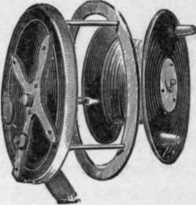

Sea Fishing From Small Boats. Part 4
Description
This section is from the book "Sea Fishing", by John Bickerdyke. Also available from Amazon: Sea Fishing.
Sea Fishing From Small Boats. Part 4
When I first began writing about sea fishing I always recommended a Nottingham reel, and lived in hopes that some day or other a special reel for saltwater angling made on that system would soon be brought into existence by enterprising tackle-makers. But now, some ten years or more later, I find myself still only able to say that the best reel is a Nottingham reel. It should be made as strongly as possible, far stronger than is used for pike fishing ; both the spindle and the neck of the reel should be extra stout. It should be fitted with the wire guard illustrated on p. 187. These guards are coming into very general use indeed, and a well-known tackle-maker has paid me the indirect compliment of including mine in a patent reel which he brought out recently.
These wooden reels have one great fault—after winding up twenty fathoms or so of wet line the salt water works its way all over the reel ; the wood swells, and sooner or later sticks. I have been in the habit of preventing this by removing the barrel of the reel from the back, and smothering the woodwork with vaseline. The Rev. F. W. Tracy, who in former years had a considerable experience of sea fishing on the coasts of Devon, Cornwall, Wales, the Isle of Man, and elsewhere, and has kindly sent me many very valuable suggestions and criticisms, tells me he makes it a rule to dress the inside of his reel with one of those enamelled paints which were recently so popular among ladies for decorating deal furniture. It may be asked, ' Why not use the old-fashioned brass or gunmetal winch ?' The answer is —To reel up a great length of line on one of those winches would take too much time. What is required is a large barrel to the reel, every turn of which is equivalent to three or four turns of the winch, thus giving the advantages of a multiplier with none of its complications and liability to get out of order.
A strong Nottingham reel six or seven inches in diameter is not by any means too large for the sea angler, and it is important that it should be fitted with what is termed an ' optional check '—that is to say, an arrangement by which it can be made a free-running reel or a reel with a check at the option of the user. A portion of the usual check mechanism consists of a double steel spring attached to the inside of the reel back by means of two steel screws. These rust at once in salt water usage. I have abused and preached against the use of steel in sea-fishing tackle until I am tired ; perhaps two centuries hence the tackle-makers will appreciate the fact that some metal which does not rust is better suited for the purpose. Perhaps then we shall have reels made on the Nottingham system, but with very little wood and no steel in them. Of course there are even now Nottingham reels' made principally of brass, vulcanite, etc, but I have come across few strong enough for sea fishing. Some of the best of these are made by Slater, of Newark, who has a patent line guard of his own—a very good one.
What we most particularly require in sea fishing is something very strong, very durable, and very simple, and at the same time not too heavy. Farlows, I am glad to say, have recently worked out a capital wooden reel for sea fishing. The checking gear consists mainly of a brass nut which screws down the axle and presses against the barrel of the reel, thus doing away with the objectionable steel spring. It is illustrated below, and is thoroughly strong and trustworthy.
For fishing from a boat an absolutely free-running reel is necessary to lower the lead quickly through the water; hence the advantage of the optional check, but a Nottingham reel without a check —I often use one myself —can with a little practice be manipulated and prevented overrunning by the pressure of a finger on the rim of the reel. Perhaps some day an ingenious person will contrive a spoon brake, such as is used on bicycles, to work on the edge of the reel and so prevent the friction with the finger.
Slater's Reel And Line Guard.
Farlows New Sea Reel.
When I first began to consider the subject of lines, I confess I felt perplexed, their number and variety being simply alarming. But, thinking the thing out, I came to the conclusion to recommend for the methods described in this chapter only one, which I firmly believe to be far and away the best. It is simply an undressed twisted line made of pure silk. Twist is infinitely stronger than plait, size for size, and silk is stronger and more durable than any other known material; so what can possibly be better?
Owing to the considerable friction between the line and the rod fittings when heavy weights are used or a big fish is being played, any dressing quickly wears off, so I never use one, and do not recommend its use ; but there is no objection whatever to barking the line in the same way as sails are barked. The process, which is very simple and inexpensive, and quickly performed, should increase durability. Of course the undressed line takes up a good deal of wet, and when I have time I usually vaseline the whole line, which helps to keep the salt water out of it, though I am not quite sure that a line treated in this way lasts so long as one which is simply washed in fresh water after use and carefully dried. But the lines I have in my mind are so cheap that it is folly to keep one until it gets rotten.
The following is a recipe recommended by Mr. Hearder, of Plymouth, for barking (the term is now obviously a misnomer) silk lines and nets : 1/2 lb. catechu ; 1/2 oz. sulphate of copper ; one gallon of water. Boil together till the solids are dissolved, remove the saucepan from the fire, put the line in the mixture and leave it for twenty-four hours. At the end of that time lift the line out of the liquid, wash it in fresh water, and dry in air.
Continue to:
- prev: Sea Fishing From Small Boats. Part 3
- Table of Contents
- next: Sea Fishing From Small Boats. Part 5
Tags
fishing, hooks, bait, fishermen, spanish mackerel, mackerel fishing